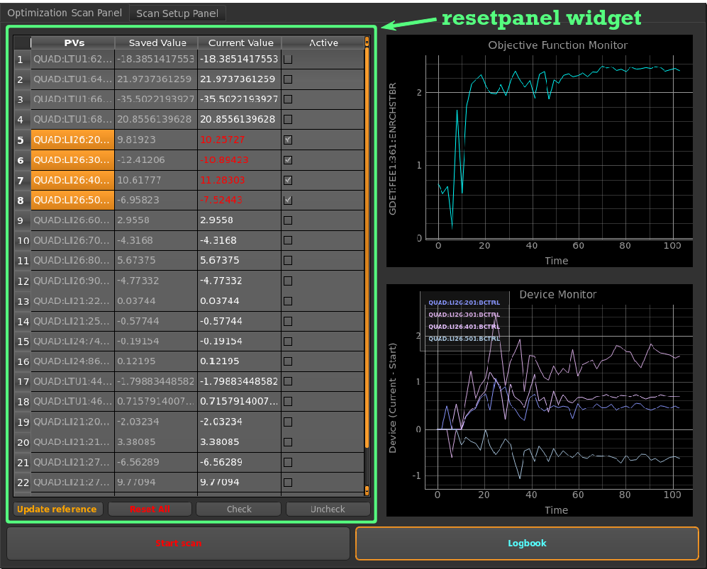

GUI Usage¶
This page describes how to use the various parts of the GUI for standard tuning and accelerator optimization.
Launching the GUI¶
The GUIs produciton version lives in the python toolbox:
- /user/tomins/ocelot/optimizer/
To launch a GUI instace form command line, navigate to the production directory and execute:
- python generic_optim.py
- ./generic_optim.py
GUI Scanner Panel¶
This is the first tab shown when the GUI opens. It shows the scanners main interface for running a scan.
Using Resetpanel for PV device control¶
{kind=link}
The resetpanel was build as a standalone PyQT widget used to monitor devices. The table displays a reference value, live readback, and checkboxes to select devices for a scan.
To choose devices for a scan, use the mouse to highlight the desired table rows, then either hit the check button. You can also select a device by hitting the checkboxes on at a time.
Button Functions:
- Update referece Updates the saved value column, using the readback in the current value column. Only effects checked rows.
- Reset All: Trims devices from their current value, back to the the saved value. Only effects checked rows.
- Check: Command for quickly checking active checkbox for all rows that are highlighted from a mouse click and drag.
- Uncheck: Reverse command for the check button. Unchecks all highlighted rows.
As a note, the Current Value column entries will show up as red when a devices differs by 0.1% from its Save Value entry.
Live Plotting¶

These two plots will start updating when the Start button is hit. They will update on every clock cycle showing the data that the optimizer has collected. They will only update at the rate of the the scanners interation period. Originaly the GUI updated plots at 10hz, but this caused epics conflics and segmentation faults.
Control Buttons¶
There are two buttons on the Optimization Scan Panel. One to start the scan, and another to logbook the UI.
- Start scan
- Begin the scan, and stops the scan on user request. Using settings selected on the UI options panel
- Logbook
- Sends an image to the XFEL physics logboox, showing the whole UI in its current state. This funciton does not save data; the is logged automatically after every scan to the physics matlab data daily directory:
- GP Heatmap
- This will launch a script to show a 2D heat map for the last GP scan. To use it you must check two PV’s only from the table, then hit the heatmap button. It will then loop though the last GP scan, showing the algorithms behavior every 5 steps. This heatmap shows three plots. The left is a scatter plot off all points in the 2D space that were chosen by the GP. The middle plot shows the GPs prediction of the (GDET) mean. The right plot shows the GP acquisition function, where the GP wan’t to sample next.
- Docs/Help
- This button launches this sphinx documentation page.
GUI Options Panel¶
This is the second tabi at the top labeled “Scan Setup Panel”. It is used to change scan parameters to non default values depending on the type of optimization you want to run.

General Config¶
Objective Function PV
This line edit can be changed to tell the optimizer to try and maximize on any epics signal, default is gas detector 241 The type of PV can be a waveform, or single float type data which is given to the optimization algorithm. Waveforms are averaged over the “Data Delay” time Scalar PVs use the last scalar value collected after the Data Delay time. (would be nice to add an average/integration option for scalars) The text should turn green if the PV is found, red if the PV is not found
Select Optimizer Algorithm
This drop down menu allows selection of the type of algorithm to use for optimizaiton. Current options are:
- Nelder-Mead Simplex
- Conjugate Gradient
- Powells Method
- Gaussian Process
The default selection is the simplex method which seems to work best for most applicaitons. Simplex, CJ and Powells are all run using the scipy.optimize toolbox, using the OcelotScanner threaded class. The GP optimizer was writen here at SLAC and is still under development.
Scanner Timing¶
The scanner timeing boxes allow configuration for how long each optimizer iterations should be.
Trim Delay
The Trim delay line edit determines how long the optimizer will wait after send a trim command to a device. It allows the scanner to pause while a magnet or other device has finished moving. Default time is 0.5 seconds.
Data Delay
The Data Delay time tells the optimizer how long it should wait to average data. For instance if this is set to two seconds and the gas detector waveform is chosen for the the objective function, it will average 240 of the wavefrom to send to optimizer.
Simplex/Scipy Scanner Setup¶
Use Normalization File
This checkbox flag tells the optimizer if it should use a normalization file to normzlize data input and output from the optimizer. The line edit to the right allows the user to change the directory location of the normalization file. details on the parameters page
Normalization Scaling Coeff
This line edit modifies a scaling coefficent for the strength of the scipy scanner moves. Marking this larger should make the optimizer algorith stronger, and smaller will make it weaker.
I modified the default normalizaton parameters to reflect empirical measurments for good ranges at high energy, so the value of 1.0 should work with the current normParams file. -TMC 6/29/16
- LI20: A = 1.50
- LI21: A = 1.25
- LI26_2-5: A = 4.0
- LI26_6-9: A = 1.5
- LTU: A = 2.0
(Notes here) http://physics-elog.slac.stanford.edu/lclselog/show.jsp?dir=/2016/24/16.06&pos=2016-06-16T01:30:25
GP Scanner Setup¶
This box contains settings for controls the GP optimizer.
GP Hyperparameter File
This line edit changes the file string for where to load hyperparameters from. The default path is ./parameters/simHyps The GP scanner will not work if asked to scan devices that do not have entries in the hyperparameter file. details on the parameters page
GP Seed File
This line edit changes the file string for where to load the matrix of data to build the initial GP model. details on the parameters page
Iterations of Seed
This line edit changes the number of scan iterations using in the simplex seeded GP scan. It will run the simplex for this may cycles before letting the GP take over. This should be an integer entry.
Use Live Simplex Mode
This checkbox sets a flag on whether the GP scan should try to load the GP Seed File to build a model, or run in live simplex seed mode.
Dev Ocelot Epics Panel¶

This button opens up an epics panel used for development.
Toggle Bypass State
Flips a flag that tells the GUI to ignore the trip detection.
Start dev obj func script
This button starts the script ./test/yOutTest.py to create a fake linear objection functino written th the PV ‘SIOC:SYS0:ML00:CALCOUT993’
Kill obj func script
Quick kill for the obj func script
Set dev devices
This sets the development pvs back to preset values in the ./test/setDevsTest.py script.